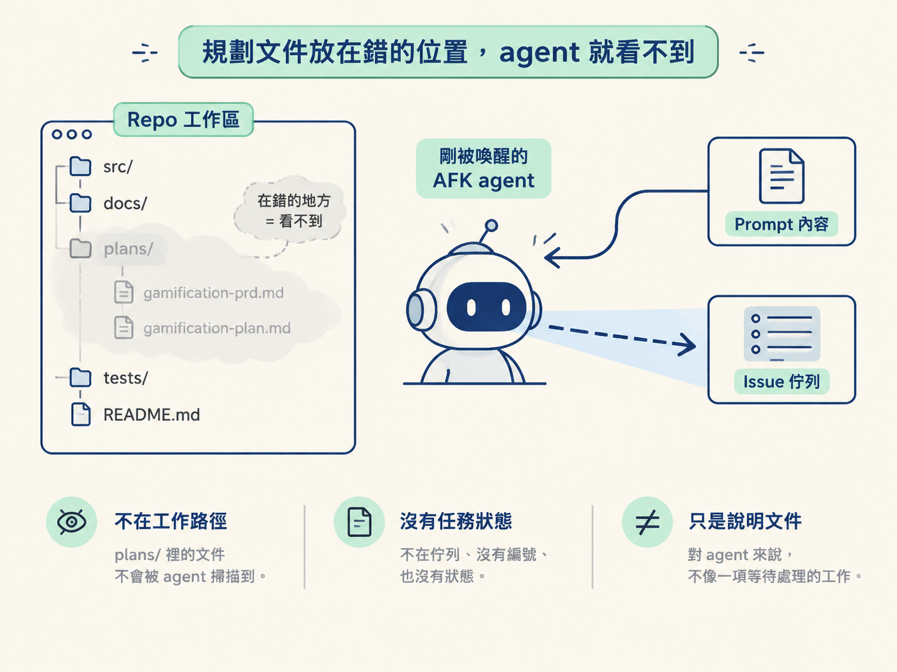
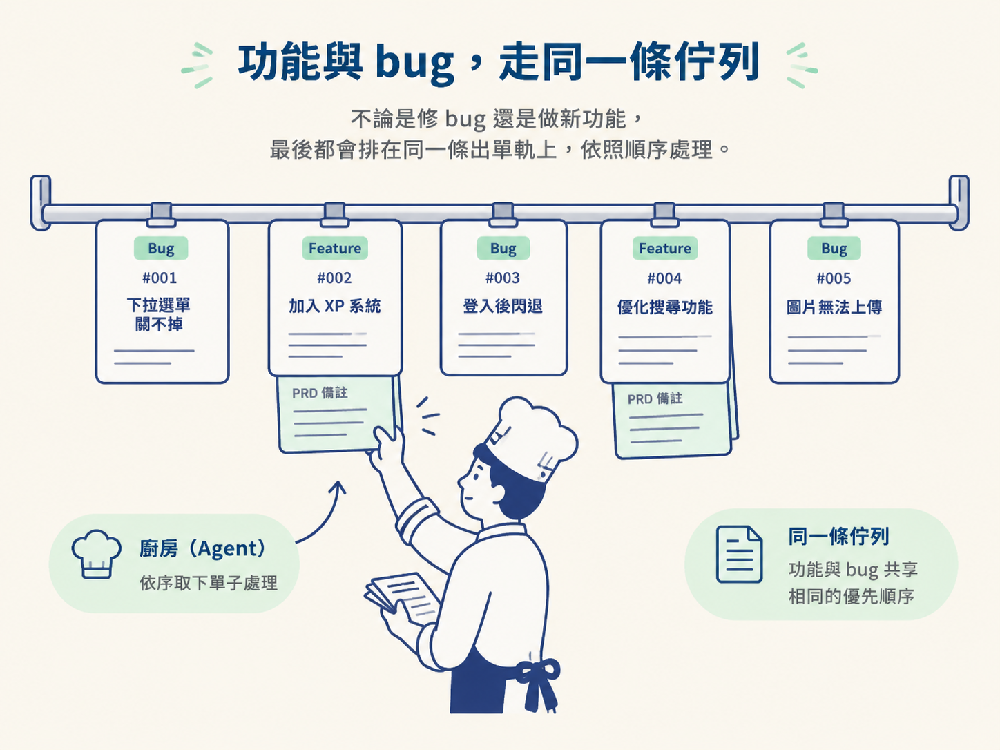

上一段我們讓 agent 接上 GitHub issue 佇列。它可以自己挑一張 bug 單、修好問題，接著留言並關閉 issue。看到這裡，你可能會開始想：如果要做的是新功能，它也能自己接著做嗎？
你照著熟悉的方式，在 repo 裡建立 plans/ 資料夾，寫好 gamification-prd.md，再補上一份 gamification-plan.md。你以為 agent 隔天醒來就會讀到這些內容，結果它完全沒有動作。
文件本身其實寫得夠完整了，問題在於它們不在 agent 的工作路徑上。每一輪重新被喚醒的 AFK agent，眼前主要只有兩樣東西：prompt 提供的內容，以及任務佇列裡的 issue。躺在 plans/ 裡的 markdown 沒有編號、沒有狀態，也不在佇列中。對 agent 來說，它比較像一份說明文件，不像一項等待處理的工作。

這一節要處理的，就是「規劃已經寫好，但 agent 不知道有這件事」的落差。我們會把規劃產出從本機檔案搬進任務佇列。搬過去之後，功能和 bug 可以走同一條輸送帶。你規劃下一批工作時，agent 也能同時實作上一批。
理解為什麼要把 PRD 與 plan 從本機檔案搬進任務佇列，並說明這個做法如何讓規劃與實作平行進行。
先釐清一件事：這不是說 PRD 不重要，也不是說可以省略規劃。PRD 仍然負責回答「我們到底要做出什麼」。改變的只是它的存放位置。
原本的做法，是由規劃類 skill 把 PRD 與 plan 寫成本機檔案。新的做法只改一件事：沿用同一個模板與同一份內容，但把它們改成 GitHub issue。也就是說，PRD 變成一張 issue，plan 也變成一張 issue。
表面上看，這只是「檔案存在哪裡」的差別，實際上卻能處理三個麻煩。
AFK agent 每一輪都是由 issue 佇列叫醒的。它的選題方式是掃描尚未關閉的 issue，再挑一張來處理。
放在工作區裡的 markdown 不在這條掃描路徑上。因此，即使計畫寫得再完整，agent 也不會把它當成待辦工作。把計畫轉成 issue，就等於把它放進 agent 唯一會主動查看的清單裡。
這個問題比較不明顯。agent 在 repo 裡探索、尋找相關程式碼時，也會看到目錄中的其他檔案。一份名為 plan.md 的文件如果放在原始碼旁邊，agent 可能會誤判：「這裡是不是已經有一部分工作在進行？」或「這份文件是不是規格？」接著做出不符合預期的決定。
把規劃文件移出工作區，agent 探索時看到的內容就單純許多：主要是實際存在的程式碼，而不是混在旁邊、可能影響判斷的規劃檔案。
如果規劃一定要先在 repo 裡寫檔案，再另外通知 agent 來讀，你和 agent 就像共用一張書桌，必須一個做完、另一個才能接手。
當規劃的產出改成直接送進 issue tracker，情況就不同了。你手上的 planner 可以繼續把新功能拆成 issue 並放上看板。另一頭正在執行的 agent，則從同一塊看板撿取工作。規劃與實作變成兩條獨立的產線，可以同時運作，彼此不必等待。
把規劃搬進 issue tracker 後，還會出現一個很實用的結果：功能與 bug 變成同一種工作單元。
對 task-selection prompt 來說，「加入 XP 系統」和「修正下拉選單關不掉」的形式是一樣的：兩者都有編號、標題、body 和 comment。agent 不需要為功能另外建立一套處理邏輯，只要按照既定的優先順序掃描即可，例如先修關鍵 bug，再補開發基礎設施，最後處理新功能的 tracer bullet。
可以把它想成餐廳的出單軌。不管是客人抱怨湯太鹹（也就是 bug），還是主廚想試一道新菜（也就是 feature），最後都會夾在同一排單子上，廚房依照單子的順序處理。

差別在於，新功能那張單子通常會附上一份比較長的備註，也就是 PRD，讓 agent 知道這道「菜」應該長什麼樣子、要解決什麼問題。
把 PRD 與 plan 從本機檔案搬成 GitHub issue，是為了讓 AFK agent 看得到它們、讓工作區保持乾淨，也讓規劃與實作可以同時進行。搬過去之後，功能與 bug 會走同一條 task-selection 佇列。PRD 依然負責回答「要做出什麼」，只是它的家從本機檔案換成了 issue tracker。
既然所有工作都要先經過人來判斷，決定哪些交給 HITL、哪些可以交給 AFK，下一步就要把這條界線畫清楚：哪些工作非你不可，哪些工作可以整批放手。下一節會用「品味」當作尺，替每張單子分類。